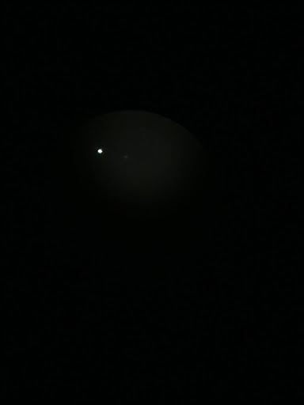

Before Viewing
I plan on viewing Polaris from the backyard of my house. There are little to no lights in the backyard so viewing Polaris shouldn’t be that difficult. First, I will try to locate the Little Dipper and the Big Dipper. Once located, I will look through a telescope to view Polaris in more detail.
After Viewing
This is a picture I took of Polaris looking through a telescope. It looks like a bright, white light in the sky. Through the telescope, a few colors can be made out such as blue, a bit of yellow, and even green. There’s more blue at the top of the star while the yellow is at the bottom. Overall, it wasn’t too difficult to locate the star and I was able to locate it straight away in the north direction. I was not, however, able to locate the Little Dipper or the Big Dipper asterisms in the sky.